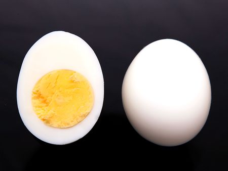

Hard Boiled Egg

Description
Hard boiled eggs make a rich, protein-packed snack, salad topping, or appetizer. Like, who hasn't dreamed of
finishing off a dozen deviled eggs in one sitting? Just us? OK, cool. Anyway, what we love most about hard
boiled eggs is how simple they are to make, especially if you're cooking them in the pressure cooker. Here's our
step-by-step guide to the perfect Instant Pot hard boiled eggs.
With this method, hard boiled eggs take just 15 minutes to cook and cool down, plus another five minutes for the
Instant Pot to reach the right pressure. But the entire process *feels* like it takes about five minutes thanks
to a technique called the 5-5-5 method.
Ingredients
Steps
- Cook
- Place the trivet or an egg steamer rack at the bottom of the inner cooking pot.
- Add eggs without stacking them on top of each other.
- Pour one cup of cold water into the inner cooking pot.
- Seal the Instant Pot, and cook eggs on manual (high pressure) for five minutes.
- While you're waiting, prepare an ice bath in a bowl or other container large enough to hold the eggs.
- Release
- Allow the Instant Pot to release pressure via natural pressure release for five minutes.
- After those five minutes, vent whatever pressure remains.
- Cool
- Transfer the eggs from the Instant Pot to the bowl of ice water.
- Let them cool for five minutes before peeling or storing.